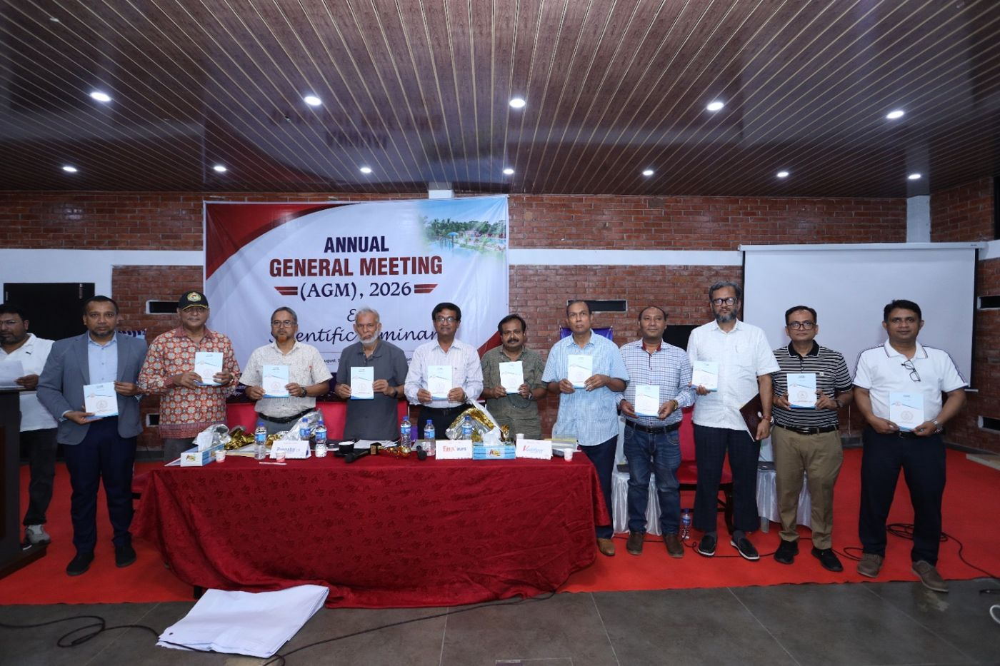
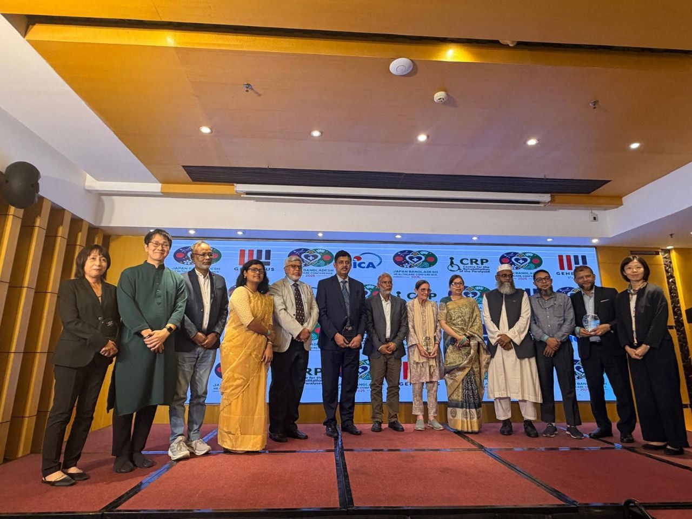

Thirty years advancing rehabilitation medicine in Bangladesh
Established in 1995, BSPMR is the leading professional organisation of Physical Medicine & Rehabilitation (PM&R) physicians in Bangladesh.
The primary body of PM&R physicians
The Bangladesh Society of Physical Medicine and Rehabilitation (BSPMR) is committed to promoting comprehensive, evidence-based and patient-centred rehabilitation care. It serves as a dynamic platform for knowledge sharing, professional development, advocacy and collaborative research in rehabilitation medicine.
Through CMEs, workshops, fellowships and national conferences, BSPMR keeps its members at the forefront of the specialty — and works with government and partner agencies so that every person with a physical challenge can access quality rehabilitation.


Our vision
A healthier, more inclusive and empowered society where individuals with physical challenges receive the care, respect and opportunities they deserve.
Our mission
To advance rehabilitation medicine in Bangladesh by upholding the highest standards of PM&R practice, developing our members, encouraging research and innovation, and advocating for persons with disabilities.
What BSPMR does
BSPMR plays a crucial role across the rehabilitation ecosystem — from the clinic to national policy.
Role in the health system
- Enhancing awareness of PM&R among healthcare providers, policymakers and the public
- Advocating for accessible and equitable rehabilitation services
- Contributing to government policies for persons with disabilities
- Catalysing national and international collaborations — training, scholarships and research
- Liaising with the government and other agencies
Key objectives
- Upholding the highest standards of PM&R practice
- Facilitating continuous professional development
- Encouraging clinical research and innovation
- Fostering national and international collaboration
- Raising public awareness about disability prevention and comprehensive rehabilitation care
Core activities
- Organising scientific conferences, seminars and workshops
- Publishing guidelines, journals and newsletters
- Providing training and capacity-building initiatives
- Advocating for the rights of persons with disabilities
- Supporting research and academic activities
- Conducting community-based rehabilitation awareness programmes
What is Physical Medicine & Rehabilitation?
PM&R — also called physiatry — is the medical specialty that restores function and quality of life for people with impairments of the muscles, bones, nerves and brain. Physiatrists lead multidisciplinary teams and treat the whole person, often without surgery.
Find a physiatristOur journey
PM&R physicians come together to form a national professional society.
BSPMRCON 2022 — “Physiatry: Mitigation of Challenges in Covid Crisis and Beyond”.
The Bangladesh Journal of Physical Medicine and Rehabilitation publishes its inaugural issue (Vol 1, Issue 1).
BSPMRCON 2026, 5–6 December, Shahid Abu Sayed International Convention Center — and the election of a new Executive Committee.
Be part of BSPMR
Join the national community of PM&R physicians — apply online and get verified by the secretariat.